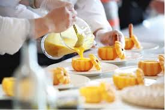

Jurusan
PPLG
Pengembangan Perangkat Lunak & Gim. Fokus pada coding, web, dan mobile apps.
Siswa: 120
Lab: 4 Ruangan

TJKT
Teknik Jaringan Komputer & Telekomunikasi. Ahli dalam infrastruktur server dan jaringan.
Siswa: 115
Lab: 3 Ruangan

Kuliner
Seni Kuliner & Tata Boga. Menciptakan tenaga profesional di bidang hospitality dan restoran.
Siswa: 115
Dapur: 3 Standar Industri